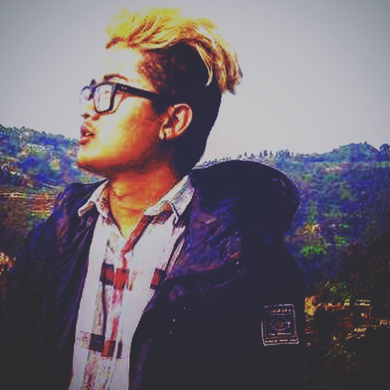

Nischal Man Bajracharya
HOME
BIOGRAPHY
CV
CONTACT

Introduction
Hello everyone, Me myself Nischal Man Bajracharya A.K.A NepZra. I'm student of the University of Northampton based on Nepal. I have just cleared up my +2 examination HSEB from Nepal. In my past years i have done animation course in Maya Animation Academy, Jamal, Kathmandu, Nepal. In my college days I have learnt Turbo c++ i.e. C-programming basics. I'm a guy with ambitions who loves to travel new places, sites, etc. In my other hand I'm able to create electronic music(EDM), hiphop, dubsteps. I have been enrolled in this field since 2015. I use Frooty Loops(Fl studio)and Ableton live 9 and play it with my Noviation Launchpad. Now I'm a computing student at NAMI college, Jorpati, Kathmandu, Nepal. I have a very keen interest in computing so I've now targated computer courses as my major subject for further study and Phd. I follow a thought of my own "The one who has two intenson, floows with a true destination."
Quick Links